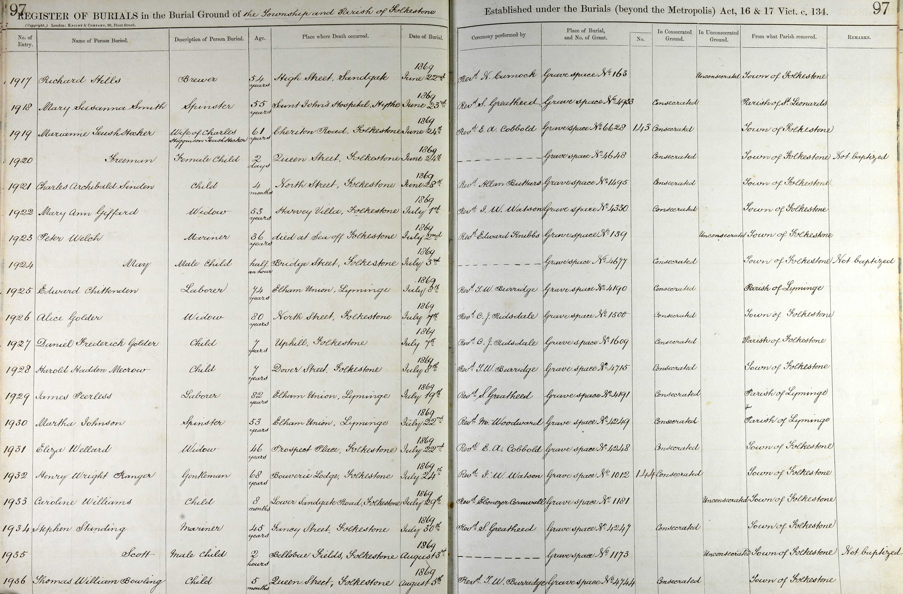
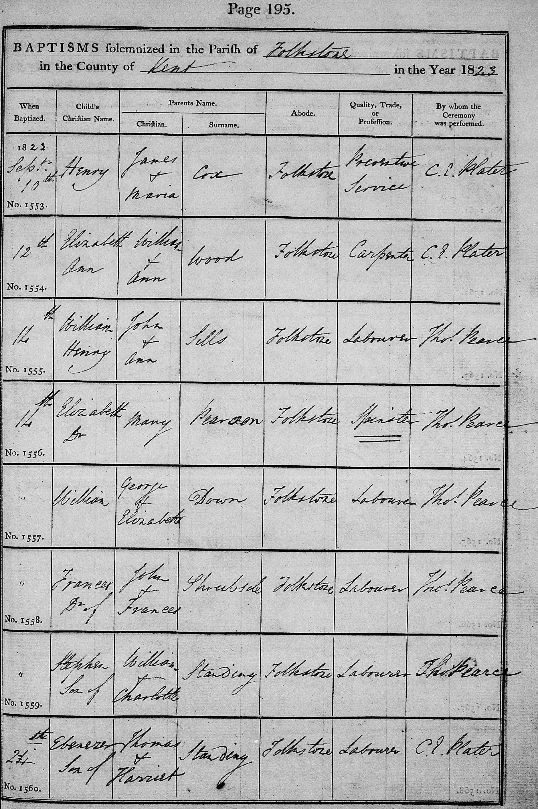
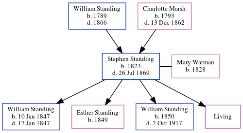

Stephen Standing 1823 - 1869
[ Home ] | [ Calendar ] | [ Surnames Index ] | [ Errors ] | [ Family History ]A labourer and mariner and the child of William Standing (an agricultural labourer) and Charlotte Marsh, Stephen Standing, the first cousin four-times-removed on the father's side of Nigel Horne, was born in Folkestone, Kent, England in 18231,2,3,4, was baptised there at The Parish Church of St Mary and St Eanswythe, Church St on 14 Sept 1823 and also married Mary Warman (with whom he had 4 children: William, Esther Hannah, William Stephen and Mary Ann, along with 1 surviving child) there at The Parish Church of St Mary and St Eanswythe, Church Street on 28 Nov 18465.
During his life, he was living on Fancy Street in Folkestone on 30 Mar 18511 and at 26 Fancy Street in Folkestone on 7 Apr 18618.
He died on 26 Jul 1869 at Fancy Street in Folkestone3,4 (pneumonia) and was buried at The Parish Church of St Mary and St Eanswythe, Church Street, Folkestone on 30 Jul 18694,6,7.
Parents
- William was born in 1789
- Charlotte was born in 1793
Children
- William was born on 10 Jan 1847
- Esther Hannah was born in 1849
- William Stephen was born in 1850
Citations
- 1851 England, Wales & Scotland Census - Findmypast (was age 28 and the head of the household)
- 1861 England Census Online publication - Provo, UT, USA: The Generations Network, Inc., 2005.Original data - Census Returns of England and Wales, 1861. Kew, Surrey, England: The National Archives of the UK (TNA): Public Record Office (PRO), 1861. Data imaged from the National
- England & Wales, FreeBMD Death Index: 1837-1915 Online publication - Provo, UT, USA: The Generations Network, Inc., 2006.Original data - General Register Office. England and Wales Civil Registration Indexes. London, England: General Register Office. © Crown copyright. Published by permission of the Cont
- England, Select Deaths and Burials, 1538-1991 Ancestry.com Operations, Inc.
- England & Wales Marriages 1837-2005 - Findmypast
- England Deaths & Burials 1538-1991 - Findmypast
- England Deaths & Burials 1538-1991 - Findmypast
- 1861 England, Wales & Scotland Census - Findmypast (was age 35 and the head of the household)
Notes
Height: 5' 3.5"
Eyes: Grey
Hair: Brown.
Media
Stephen Standing - Mary Warman - marriage certificate

Stephen Standing - death certificate

Stephen Standing - buirial record

1861 UK Census

1851 UK Census

Stephen Standing - Baptism

Registration of Merchant Seaman's Ticket

Record of Merchant Seaman's Ticket

England Deaths and Burials 1538-1991 Transcription - R_277040190
1861 England, Wales & Scotland Census Transcription - GBC-1861-0003620797
England & Wales deaths 1837-2007 Transcription - BMD-D-1869-3-AZ-000292-364
1851 England, Wales & Scotland Census Transcription - GBC-1851-0005967396
Kent, Canterbury Archdeaconry burials 1538-1988 - GBPRS/CANT/D/95111648
Canterbury Baptisms Transcription - GBPRS-CANT-B-96145634
Canterbury Marriages Transcription - GBPRS-CANT-M-97001461-1
England, Births & Baptisms 1538-1975 Transcription - R_22085483991
England, Births & Baptisms 1538-1975 Transcription - R_884232350
England, Births & Baptisms 1538-1975 Transcription - R_885250261
England Deaths & Burials 1538-1991 - R_276351769
Family Tree
Map
Generated by ged2site. Last updated on Jul 3, 2024
Known Issues
Date of baptism (14 Sep 1823) before date of birth (1823)